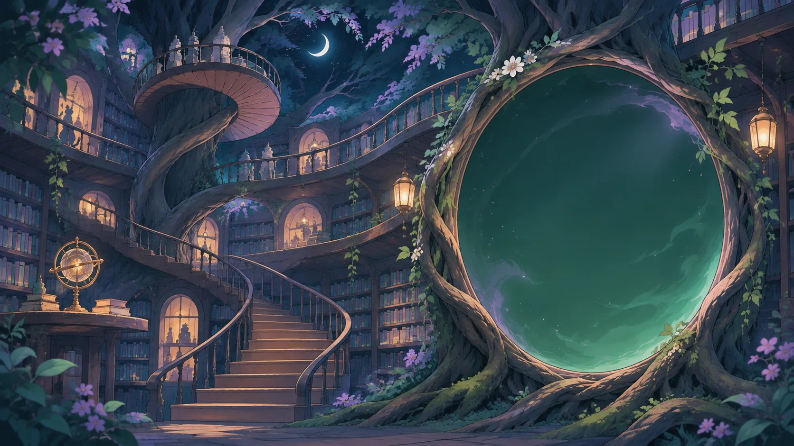
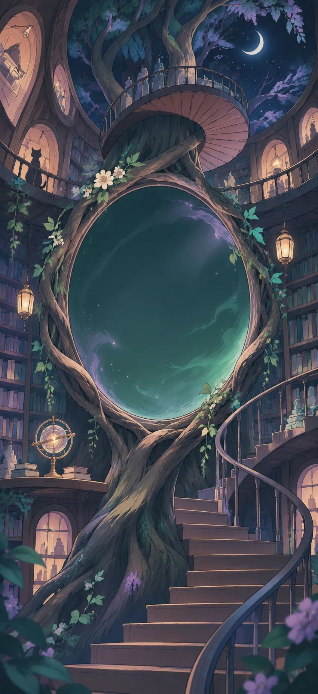
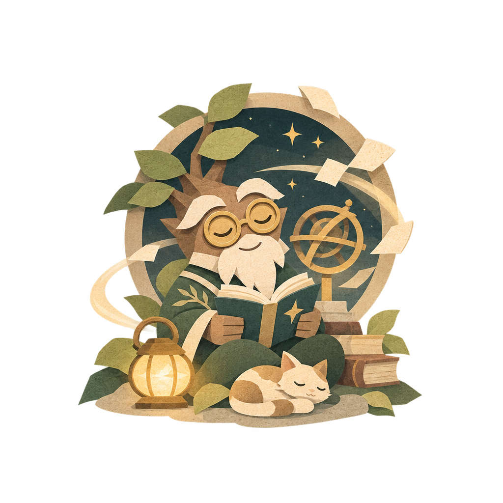
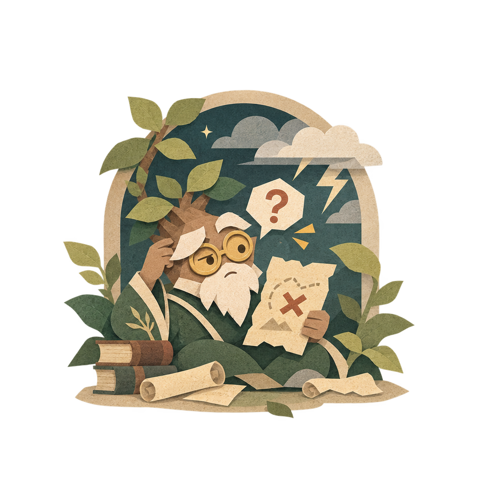

Role scale
Icon-only button cần aria-label. Selected phải có dấu hiệu ngoài màu.
Một chỗ để xem thành phần đang có trong li., thử trạng thái và so với màn hình thật. Không ép cả khu rừng vào một cái button generic.
Đã implement: token và runtime CSS đang chạy. Đã có quyết định cụ thể: ví dụ thẻ Thần Chú 2 cột trên điện thoại và nav active màu cát. Chưa duyệt: tổng thể Component Library / visual identity G2.
Specimen trong trang này là UI để review; bên dưới có iframe chạy đúng app cho phần Thần Chú. Thử bằng mắt rồi phản hồi trong chat; tương tác ở showcase không ghi thành quyết định.
Màu --olive (#65734C) hiện chỉ nhấn vạch bên trái nhãn section; nó không phải màu selected, focus, CTA, trạng thái học tập hay nền card.
Khám phá phương pháp học và tư duy, mỗi mục đều có bối cảnh riêng.
--olive · #65734C.page:not(#page-home) .section-shell > .kicker3px solid var(--olive) · khoảng chữ: var(--li-space-2) (8px)Dùng cho: điểm nhấn trang trí trên nhãn phân loại/section. Không dùng cho: trạng thái tương tác, thông báo, nút hành động hoặc tô lại illustration.
Xem đúng trang đang dùng trong appSpecimen tái hiện đúng token của app, không phải đề xuất thêm component mới hay xác nhận duyệt visual identity G2.
Một thư viện icon cho functional UI. 18px inline, 20px action, 22px navigation, 24px showcase. Không trộn glyph, emoji và kiểu nét khác nhau; con dấu 理 và nhân vật Lão Lý giữ artwork riêng.
Icon-only button cần aria-label. Selected phải có dấu hiệu ngoài màu.
Bookmark chỉ dành cho Lưu/Dấu Trang. Archive chỉ Tủ Riêng; Book-open cho Thần Chú. Không dùng chung một icon cho hai tác vụ không cùng nghĩa.
Ba variant dùng chung một anatomy và bộ công cụ bên phải. Logo hoặc Back nằm trái — không ép cả hai lên cùng vị trí. Transparent chỉ đổi surface trên cảnh Home, không chèn thêm thanh nền.
Top-level: dùng đúng con dấu 理 và chữ li. của app; giữ 3 utility target 48px.
Back thay vị trí logo trên trang con, không thêm đường viền/nền cho nút. Sticky trong app; bản mẫu chỉ thử state.

Nằm trực tiếp trên illustration Home, không background, border hay shadow. Logo/utility sáng để rõ trên cảnh tối. Đây là variant review, chưa áp dụng vào Home thật.
22px, target 48px, selected màu cát. Click thử selected.
Selected capsule màu cát, nhãn và icon moss; một tab active.
Bấm các button để thử phản hồi, không có dữ liệu được lưu.
Hành động phụ trong bài đọc, footer của card hoặc danh sách. Có underline và focus; không dùng outline button cho tất cả link.
Default · hover · focus-visible · pressed · disabled; target >=44px.
Đây là variant mày đã chọn: 2 tile / 1 row trên điện thoại. Tên tiếng Việt đầy đủ, English original còn đọc được, mô tả preview 2 dòng. Chạm card để mở chú giải thật.
Đây là surface đọc dài: padding 20–24px, body 16/24, không dùng kiểu compact của Thần Chú cho toàn bộ card.
.surface / .panelMedia và nội dung là hai vùng có anatomy riêng. Test crop 16:9, split layout, minh hoạ contained, mobile stack và text dài với asset có sẵn.
.destination / real artCùng anatomy, phân tầng bằng nền chứ không thay shape. Level 01 trắng ngà sáng = cream; Level 02 vàng ngà = paper-2. Square corner, shadow cứng, nội dung 16/24.
Không phải mọi kết quả khảo sát đều suy rộng được. Hãy đọc nguồn, đối tượng được hỏi và phần chưa được đại diện.
Nền vàng ngà giúp tách nội dung lưu trữ và phần hỗ trợ nhẹ nhàng, không biến mỗi card thành một poster.
Cùng cấu trúc card biên tập, chỉ có viền; không có shadow.
Đầy đủ title, supporting text và action đọc được trên nền tối.
Ví dụ bằng đúng asset đã có trong app; không công bố illustration ngành học chưa duyệt. Compare: media-top 16:9, media-side responsive, contained character art. Nội dung luôn nằm ngoài vùng crop để không mất chữ.
Hình làm bối cảnh riêng; tiêu đề, mô tả và CTA không đặt trực tiếp lên phần tranh bị crop.
Xem app thật
Art nhân vật giữ nguyên tỷ lệ, không cắt mặt; illustration không có tấm nền riêng.
Xem vị trí thật
Hình dọc chiếm một bên card; mobile chuyển thành khung ảnh phía trên, không ép text hẹp.
Ảnh vẫn crop theo khung, card không shadow.
Illustration nằm trực tiếp trên mặt card, không thêm rectangle nền sau hình.
Đúng horizontal ở cả desktop lẫn mobile: không hình, có ảnh, illustration trong suốt và icon. Dùng nút để xem đồng bộ từng surface Primary / Secondary / Dark.
Khám phá cách xã hội hình thành và vận hành qua những câu hỏi gần gũi.
Ảnh đứng bên cạnh nội dung, crop có chủ đích.
Nhân vật không bị nhốt vào một ô màu riêng.
Icon chức năng đơn sắc, nhường ưu tiên cho nội dung.
Hai option cùng nội dung để mày so trực tiếp. Option A giấy sáng là concept nhẹ; Option B xanh rừng lấy đúng chất liệu của chat bubble hiện trên Home trong ảnh mày gửi. Bản forest green không có stroke ở thân lẫn đuôi bubble; bản light paper vẫn giữ viền mảnh. Chưa tự duyệt G2 toàn bộ.
Chưa có từ khóa.
Có nội dung; vẫn sửa được.
Nhập ít nhất 3 ký tự để tiếp tục.
Disabled không nhận focus.
Có thể đọc/copy; không sửa.
Khi focus, viền hiện có dày 3px và đổi sang xanh rừng đậm branding; không có outline bên ngoài.
0 / 240 ký tự · chưa lưu
Đúng surface Bút Ký của app: dòng kẻ 32px theo baseline, nền porcelain sáng nhẹ (không trắng tinh) và caret/placeholder có thể đọc được.
Đang xem: Tất cả · thử chọn nhóm.
Full pill corners (999px) · 44px hit target · default/selected/hover/focus/disabled · aria-pressed. Cả bộ lọc Thần Chú thật cũng theo radius này.
Tag để nhận diện category, không phải filter button. Không có selected/aria-pressed và không thay đổi danh sách khi chạm.
Đúng 2 lựa chọn Có / Chưa trên mỗi câu hỏi trong Check-in thực tế; toàn bộ Check-in vẫn có thể bỏ qua.
Label luôn hiện; helper không thế chỗ label. Error có aria-invalid và nội dung giải thích. Readonly khác disabled. Tuyệt đối không báo đã lưu chỉ vì người dùng gõ vào.
Những component cần đúng hierarchy và có đủ trạng thái, không phải làm tượng sáp trong một cái gallery. Các interaction dưới đây chỉ là specimen, không chạm dữ liệu lưu của li.
Nền trong suốt, không khung; hit target 48px. Trạng thái bookmark đã chọn chỉ dùng oval cát, xóa khác hoàn toàn bỏ lưu.
Specimen · Bấm icon để thử trạng thái.
Bản nhỏ hơn CTA chính: 40px trên desktop, tối thiểu 44px cho touch. Có label rõ, viền và shadow nhẹ.
Dùng cho tác vụ thứ cấp; không thay thế nút primary trên biểu mẫu dài.
Menu nổi, selected state, click-outside, ESC và ↑/↓. Không đồng nhất với native select.
Chọn lĩnh vực trong menu mẫu.
Công tắc 2 trạng thái cho ngôn ngữ học; đổi nhãn rõ, có aria-checked. Chưa đụng ngôn ngữ bài học thật.
Menu nhóm theo mục đích, một mục active; mobile cần chuyển thành navigation phù hợp, không ép sidebar cố định.
Chọn một hàng để xem selected state.
Đã chọn: Bài học
Chọn: Card
Nhập gì đó để thử icon input.
Đo bước thực hiện đã hoàn thành / tổng bước; không đồng nghĩa độ thành thạo, XP hay điểm sức khỏe. Các số bên dưới đều là demo.
2 / 5 bài đã mở và hoàn thành · ví dụ. Không gọi là “nắm vững 40%”.
Bản component demo để so cả hai cách nhìn cùng một ngày. Calendar mã hóa nhịp học đã chọn bằng 4 sắc xanh từ nhạt đến đậm; chart stack Bài / Vấn đề / Input theo số hoạt động. Màu không phải điểm sức khỏe, và ngày không có record không có nghĩa là không học.
Chấm nâu = hôm nay. Viền xanh = ngày được chọn. Không đánh dấu các ngày xung quanh.
DỮ LIỆU GIẢ LẬP ĐỂ REVIEW UI · 4 cấp màu là đề xuất chưa được PO chốt, không phải mức sức khỏe hay phép đo năng lực.
Chấm nâu = hôm nay. Viền xanh = cột đang chọn, chỉ một đường viền.
Chọn ngày trên lịch hoặc cột.
Cột cao theo tổng hoạt động, phần chồng cho biết số Bài / Vấn đề / Input. Chiều cao dùng cùng thang đo toàn tháng; ngày không có dữ liệu để trống, không vẽ thành số 0.
Trạng thái trung tính: hướng dẫn, lưu ý giới hạn của câu trả lời.
Khi lưu thất bại, cần thông báo rõ — không được viết “đã lưu” trước xác nhận.
Asset đã duyệt, dùng hai trạng thái khác nhau: đang xử lý thật / thất bại thật. Hai card bên dưới là specimen tĩnh, không tự gọi API hay báo lỗi giả.

Đang đọc và kiểm tra bản sao của ngươi.

Tệp JSON không hợp lệ hoặc không đúng bản sao li.
Mở luồng nhập để thử lạiTrong app: Cài đặt → Dữ liệu của bạn → Nhập bản sao. Loading là lúc chờ đọc file; Error hiển thị khi JSON sai, quá 10 MB hoặc ghi vào localStorage thất bại. G2 và thử máy thật vẫn mở.
Chọn kích thước để so card Thần Chú thật, search, filter, Lão Lý và detail. Iframe mở đúng index.html?page=guide của phiên bản này, không dùng HTML minh họa card để đánh lừa.
Muốn kiểm tra bằng iPhone thật: Mở trực tiếp trang Thần Chú. Trong preview hẹp, khu vực iframe có thể cuộn ngang để giữ đúng chiều rộng giả lập.
| Nhóm | Runtime selector | Trạng thái |
|---|---|---|
| Functional icon system | Lucide / data-lucide | Sizes 18/20/22/24, consistent stroke and semantic map |
| Text-link action | .ds-link specimen | Chờ review variants/states |
| Large two-level card | .surface / .panel + cream/paper-2 | Chờ duyệt anatomy, hierarchy |
| Textarea | .notebook / .text-editor | Review input state matrix |
| Filter chips | #method-filters .filter | Review selected/scroll/focus |
| Subtle chat bubble | #page-home .hero-dialogue-bubble | Candidate / chưa chốt G2 |
| Header / utility | .header .tool-button | Đã implement; active sand pill có quyết định |
| Bottom navigation | .mobile-nav .nav-btn | Đã implement; cần real iOS QA |
| Actions / CTA | .action / .hero-actions | Đã implement; variants tổng thể chưa chốt |
| Thần Chú compact tile | #page-guide #method-cards > .method-card | PO đã chọn 2-up mobile; regression token vừa sửa |
| Editorial panel / card | .panel / .surface / .destination | Observed; còn review |
| Check-in radio modal | #checkin-modal | Đã implement; real Safari / VoiceOver chưa chứng nhận |
| Lão Lý companion | #laoly-fab / #buddy-modal | Overlaps có ngoại lệ; G2 tổng thể còn mở |
| Mirror / question | #page-home .mirror-message | Art geometry riêng; nhiều biến thể nội dung cần review |
| Lesson cards / source | .l09-* / .source-status | Wave1 live; Wave2/3 không phát hành |